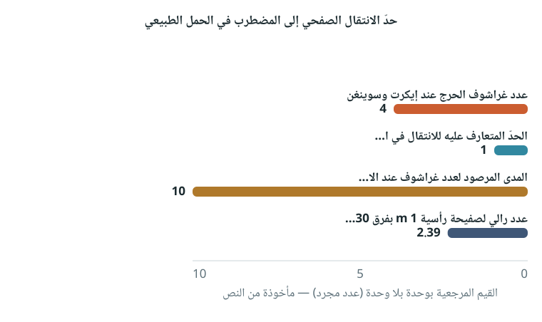

حدّ الانتقال الصفحي إلى المضطرب في الحمل الطبيعي
Laminar-Turbulent Transition in Natural Convection
حدّ الانتقال من الحمل الطبيعي الصفحي إلى المضطرب ليس رقماً واحداً: عدد غراشوف حرج نحو 4×10⁸ عند إيكرت، وعدد رالي حرج نحو 10⁹ للطبقة الحدية على صفيحة رأسية، والمدى المرصود 10⁸–10⁹ يتغيّر بالمائع ومستوى الاضطراب المحيط.
على صفيحة رأسية ساخنة تنمو طبقة حدية صاعدة بفعل الطفو، وتبقى صفحية ما دامت قوى اللزوجة قادرة على كبت الاضطرابات الصغيرة. وعند حدّ معيّن يصير تضخيم الاضطراب أقوى من التخميد، فتنفصل الطبقة وتدخل حركة مضطربة، فيتغيّر توزيع السرعة ويزداد معامل الحمل. ينص Holman أن إيكرت وسوينغن رصدا عدد غراشوف الحرج عند 4×10⁸، وأن قيماً بين 10⁸ و10⁹ تُلاحظ باختلاف الموائع ومستويات الاضطراب في البيئة. وفي الأدبيات الهندسية يُستخدم عدد رالي للحدّ نفسه: Ra = Gr·Pr، والحدّ المتعارف عليه 1×10⁹. ولذلك لا تصحّ علاقة الصفحي عند عدد غراشوف قريب من 10⁹ ولا علاقة الاضطراب عندها؛ وارتباط تشرشل–تشو (7-29) في Holman يغطي النطاقين بانتقال سلس، وهو المسار الآمن بين 10⁸ و10⁹.
كيف تعمل الظاهرة؟
الطفو هو المحرك: تسخين السطح يخفض كثافة المائع الملاصق، فينشأ فرق ضغط هيدروستاتيكي عند الارتفاع نفسه يدفع المائع صاعداً، وتقاوم اللزوجة هذا الدفع فتتشكل طبقة حدية تزداد سماكتها مع الارتفاع. داخل الطبقة تحمل معادلة الزخم حدّ الطفو gβ(T−T∞)، فحين تتجاوز قوة الطفو قوى اللزوجة يصير مقياس التوازن هو Gr. الاضطرابات الصغيرة القادمة من المحيط تُخمَد ما دام التخميد اللزج أكبر من التضخيم، وعند Gr الحرج ينقلب التوازن: تظهر بقع مضطربة موضعية تنتقل الطبقة فيها من الصفحي إلى المضطرب، فتنمو سماكتها أسرع ويزداد معامل الحمل لأن المزج يقرّب المائع الساخن من السطح. ولأن Pr يضبط نسبة انتشار الزخم إلى انتشار الحرارة، يظهر الحدّ في عدد رالي Ra = Gr·Pr لا في Gr وحده.
العلاقة بالأرقام
القاعدتان: Gr = gβΔT L³/ν² وRa = Gr·Pr، والخصائص تُقيَّم عند حرارة الغشاء T_f. مثال هواء عند T_f = 310 K: β = 1/T_f = 1/310 = 3.226×10⁻³ K⁻¹؛ ν = 1.69×10⁻⁵ m²/s ومنه ν² = 2.856×10⁻¹⁰ m²/s²؛ Pr = 0.72. لصفيحة طولها L = 1 m وΔT = 30 K: البسط 9.81 × 3.226×10⁻³ × 30 × 1³ = 0.9494، والقسمة على 2.856×10⁻¹⁰ تعطي Gr = 3.32×10⁹، ثم Ra = 3.32×10⁹ × 0.72 = 2.39×10⁹ وهو فوق 10⁹ فالجريان مضطرب. وبتخفيض الطول إلى 0.5 m ينزل عامل L³ إلى 0.125: Gr = 3.32×10⁹ × 0.125 = 4.15×10⁸ وRa = 4.15×10⁸ × 0.72 = 2.99×10⁸، أي في نطاق الانتقال. والتحويل بين الرقمين: Gr = 4×10⁸ مع Pr = 0.72 يعطي Ra = 2.88×10⁸، وRa = 10⁹ يعطي Gr = 10⁹ ÷ 0.72 = 1.39×10⁹.
مفاهيم متقاربة
الخطأ الأول أن يُستبدل Gr بـRa بلا معامل Pr: في الهواء الفرق نحو 28%، وفي الماء (Pr ≈ 7) يصير الفرق سبعة أضعاف ويقلب الحكم عند الحدّ. والثاني خلط حدّ الطبقة الحرة بحدّ القناة: في قناة عمودية محصورة بين جدارين يتغيّر الحدّ لأن الصعود يقيّد نفسه بالرجوع الهابط. والثالث نقل حدّ الصفيحة الرأسية إلى الأجسام الأفقية: الصفيحة الأفقية الساخنة نحو الأعلى تنمو طبقتها في اتجاه الجاذبية لا عرضياً عليها، ولكل هندسة ارتباطها المستقل. والرابع اعتبار Gr_crit خاصية للمائع: هو خاصية للمائع والهندسة وظرف السطح معاً، فيتغيّر بتغيّر أي منها.
حدود التطبيق
الرقم 4×10⁸ مقيس لصفيحة رأسية مستوية بدرجة حرارة سطح ثابتة في هواء ساكن، فيسقط إذا تغيّر أحد هذه القيود: سطح خشن أو مضلّع يبكّر الانتقال؛ تدفئة بفيض حراري ثابت بدل حرارة ثابتة تغيّر توزيع الحرارة على السطح؛ مائع بـPr مختلف (الفلزات السائلة تحتاج Gr أعلى، والزيوت Gr أدنى)؛ تيار خارجي ولو ضعيف يحوّل المسألة إلى حمل مختلط ويُبطل الحدّ؛ والحبس بين جدران يمنع نمو الطبقة كما في الفضاء الحر. ولا تُستخدم الارتباطات خارج نطاق بياناتها المعلن، ولا تُعمَّم قيمة Gr على تدفق داخل أنبوب.

| الكمية | القيمة | المصدر |
|---|---|---|
| عدد غراشوف الحرج عند إيكرت وسوينغن | 4×10⁸ بلا وحدة (عدد مجرد) | [1] |
| الحدّ المتعارف عليه للانتقال في الطبقة الحدية بعدد رالي | 1×10⁹ بلا وحدة (عدد مجرد) | [1] |
| المدى المرصود لعدد غراشوف عند الانتقال | 10⁸–10⁹ بلا وحدة (عدد مجرد) | [1] |
| عدد رالي لصفيحة رأسية 1 m بفرق 30 K في الهواء | 2.39×10⁹ بلا وحدة (عدد مجرد) | [1] |
المصادر
استشهد بهذا المصطلح
الصيغتان مبنيتان من بيانات الصفحة نفسها: العنوان والتاريخ ورابط النسخة المنشورة.
حدّ الانتقال الصفحي إلى المضطرب في الحمل الطبيعي — Laminar-Turbulent Transition in Natural Convection. (2026). ديوان المعرفة — انفراد. https://infiradev.com/diwan/terms/term-laminar-turbulent-transition.html
@misc{term-laminar-turbulent-transition2026,
title = {حدّ الانتقال الصفحي إلى المضطرب في الحمل الطبيعي},
titleaddon = {Laminar-Turbulent Transition in Natural Convection},
howpublished = {{ديوان المعرفة — انفراد} — مرجع علمي عربي},
year = {2026},
url = {https://infiradev.com/diwan/terms/term-laminar-turbulent-transition.html},
urldate = {2026-11-26},
note = {مراجعة علمية: hermes — مراجعة آلية بالتكليف 2026-11-26}
}
راجعه: hermes — مراجعة آلية بالتكليف 2026-11-26 · 2026-11-26 · آخر تحديث 2026-11-26